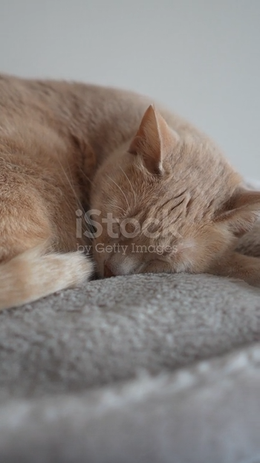
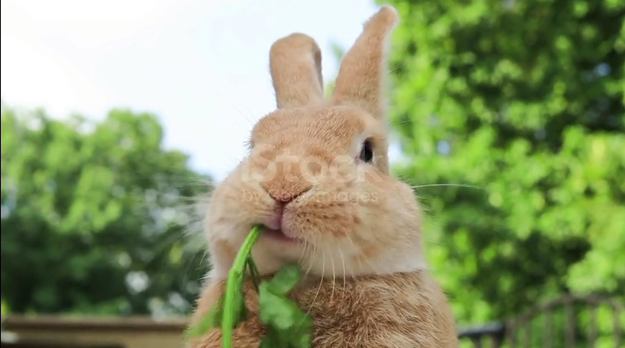
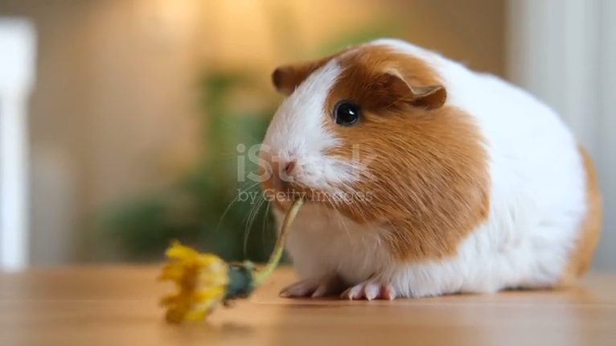

Mauri
Playful and people-loving. Gets along with other dogs and loves long walks.
Ask about adoptionAn animal shelter where everyone gets a fresh start
Here are the current residents of the shelter. Interested in one of them? Get in touch and we will arrange a time to meet.
Playful and people-loving. Gets along with other dogs and loves long walks.
Ask about adoption



